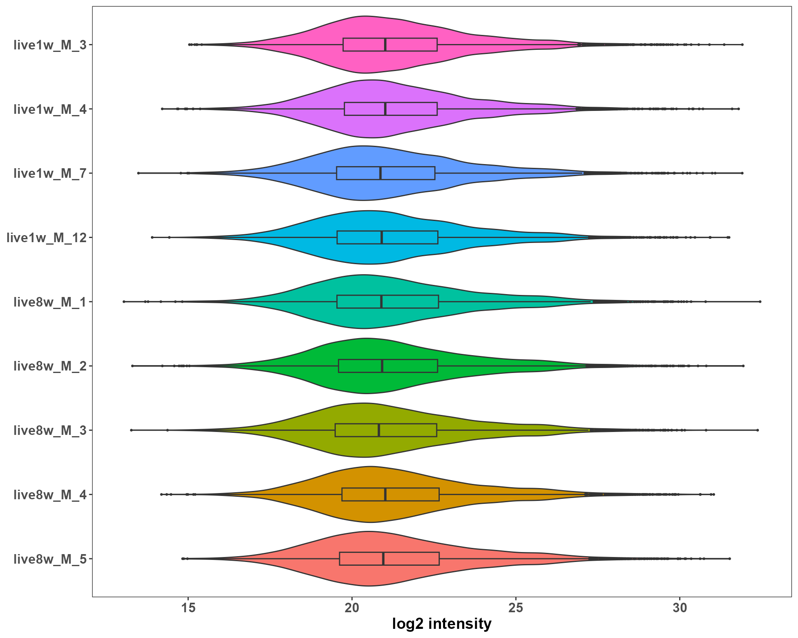
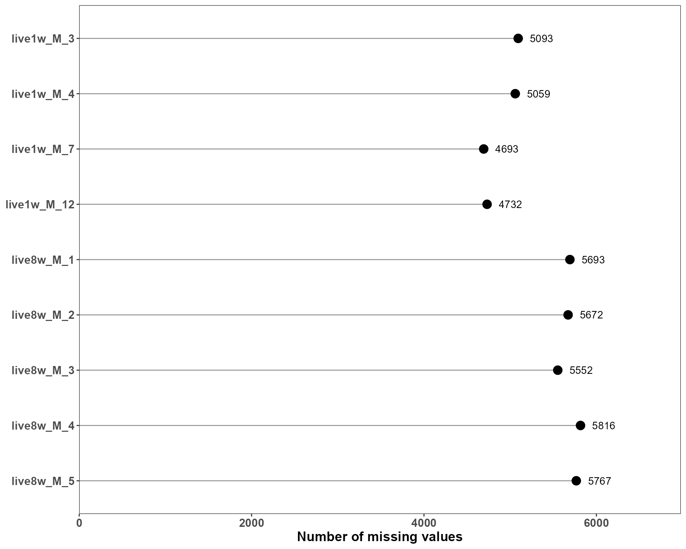
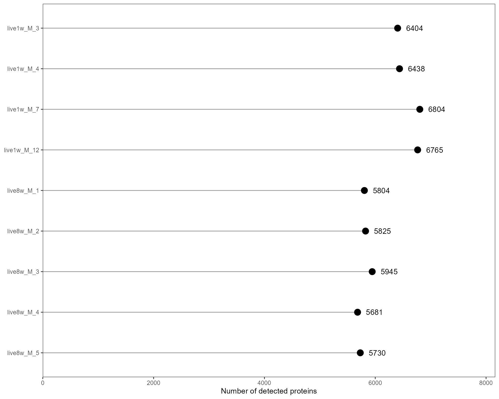
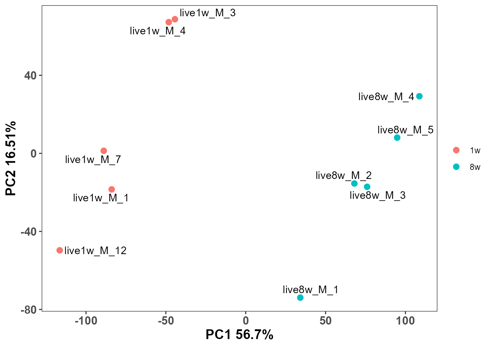

library(EasyProtein)
library(tidyverse)
#> Warning: package 'ggplot2' was built under R version 4.5.2
#> Warning: package 'tibble' was built under R version 4.5.2
#> Warning: package 'tidyr' was built under R version 4.5.2
#> Warning: package 'readr' was built under R version 4.5.2
#> Warning: package 'purrr' was built under R version 4.5.2
#> Warning: package 'stringr' was built under R version 4.5.2
#> ── Attaching core tidyverse packages ──────────────────────── tidyverse 2.0.0 ──
#> ✔ dplyr 1.1.4 ✔ readr 2.1.6
#> ✔ forcats 1.0.1 ✔ stringr 1.6.0
#> ✔ ggplot2 4.0.1 ✔ tibble 3.3.1
#> ✔ lubridate 1.9.4 ✔ tidyr 1.3.2
#> ✔ purrr 1.2.1
#> ── Conflicts ────────────────────────────────────────── tidyverse_conflicts() ──
#> ✖ dplyr::filter() masks stats::filter()
#> ✖ dplyr::lag() masks stats::lag()
#> ℹ Use the conflicted package (<http://conflicted.r-lib.org/>) to force all conflicts to become errors
library(SummarizedExperiment)
#> Warning: package 'SummarizedExperiment' was built under R version 4.5.2
#> Loading required package: MatrixGenerics
#> Warning: package 'MatrixGenerics' was built under R version 4.5.2
#> Loading required package: matrixStats
#>
#> Attaching package: 'matrixStats'
#>
#> The following object is masked from 'package:dplyr':
#>
#> count
#>
#>
#> Attaching package: 'MatrixGenerics'
#>
#> The following objects are masked from 'package:matrixStats':
#>
#> colAlls, colAnyNAs, colAnys, colAvgsPerRowSet, colCollapse,
#> colCounts, colCummaxs, colCummins, colCumprods, colCumsums,
#> colDiffs, colIQRDiffs, colIQRs, colLogSumExps, colMadDiffs,
#> colMads, colMaxs, colMeans2, colMedians, colMins, colOrderStats,
#> colProds, colQuantiles, colRanges, colRanks, colSdDiffs, colSds,
#> colSums2, colTabulates, colVarDiffs, colVars, colWeightedMads,
#> colWeightedMeans, colWeightedMedians, colWeightedSds,
#> colWeightedVars, rowAlls, rowAnyNAs, rowAnys, rowAvgsPerColSet,
#> rowCollapse, rowCounts, rowCummaxs, rowCummins, rowCumprods,
#> rowCumsums, rowDiffs, rowIQRDiffs, rowIQRs, rowLogSumExps,
#> rowMadDiffs, rowMads, rowMaxs, rowMeans2, rowMedians, rowMins,
#> rowOrderStats, rowProds, rowQuantiles, rowRanges, rowRanks,
#> rowSdDiffs, rowSds, rowSums2, rowTabulates, rowVarDiffs, rowVars,
#> rowWeightedMads, rowWeightedMeans, rowWeightedMedians,
#> rowWeightedSds, rowWeightedVars
#>
#> Loading required package: GenomicRanges
#> Warning: package 'GenomicRanges' was built under R version 4.5.2
#> Loading required package: stats4
#> Loading required package: BiocGenerics
#> Warning: package 'BiocGenerics' was built under R version 4.5.2
#> Loading required package: generics
#>
#> Attaching package: 'generics'
#>
#> The following object is masked from 'package:lubridate':
#>
#> as.difftime
#>
#> The following object is masked from 'package:dplyr':
#>
#> explain
#>
#> The following objects are masked from 'package:base':
#>
#> as.difftime, as.factor, as.ordered, intersect, is.element, setdiff,
#> setequal, union
#>
#>
#> Attaching package: 'BiocGenerics'
#>
#> The following object is masked from 'package:dplyr':
#>
#> combine
#>
#> The following objects are masked from 'package:stats':
#>
#> IQR, mad, sd, var, xtabs
#>
#> The following objects are masked from 'package:base':
#>
#> anyDuplicated, aperm, append, as.data.frame, basename, cbind,
#> colnames, dirname, do.call, duplicated, eval, evalq, Filter, Find,
#> get, grep, grepl, is.unsorted, lapply, Map, mapply, match, mget,
#> order, paste, pmax, pmax.int, pmin, pmin.int, Position, rank,
#> rbind, Reduce, rownames, sapply, saveRDS, table, tapply, unique,
#> unsplit, which.max, which.min
#>
#> Loading required package: S4Vectors
#> Warning: package 'S4Vectors' was built under R version 4.5.2
#>
#> Attaching package: 'S4Vectors'
#>
#> The following objects are masked from 'package:lubridate':
#>
#> second, second<-
#>
#> The following objects are masked from 'package:dplyr':
#>
#> first, rename
#>
#> The following object is masked from 'package:tidyr':
#>
#> expand
#>
#> The following object is masked from 'package:utils':
#>
#> findMatches
#>
#> The following objects are masked from 'package:base':
#>
#> expand.grid, I, unname
#>
#> Loading required package: IRanges
#> Warning: package 'IRanges' was built under R version 4.5.2
#>
#> Attaching package: 'IRanges'
#>
#> The following object is masked from 'package:lubridate':
#>
#> %within%
#>
#> The following objects are masked from 'package:dplyr':
#>
#> collapse, desc, slice
#>
#> The following object is masked from 'package:purrr':
#>
#> reduce
#>
#> The following object is masked from 'package:grDevices':
#>
#> windows
#>
#> Loading required package: Seqinfo
#> Warning: package 'Seqinfo' was built under R version 4.5.2
#> Loading required package: Biobase
#> Warning: package 'Biobase' was built under R version 4.5.2
#> Welcome to Bioconductor
#>
#> Vignettes contain introductory material; view with
#> 'browseVignettes()'. To cite Bioconductor, see
#> 'citation("Biobase")', and for packages 'citation("pkgname")'.
#>
#>
#> Attaching package: 'Biobase'
#>
#> The following object is masked from 'package:MatrixGenerics':
#>
#> rowMedians
#>
#> The following objects are masked from 'package:matrixStats':
#>
#> anyMissing, rowMediansQuick Start with EasyProtein
1. Tutorial metadata
-
Tutorial name: Quick Start with EasyProtein
-
Tutorial type: Minimal end-to-end workflow
-
Target audience: First-time users of
EasyProtein
-
Primary goal: Show how to complete a basic
proteomics analysis workflow with minimal input and minimal parameter
tuning
-
Expected outcome: You will learn how to:
- load example data
- create a standard EasyProtein analysis object
- inspect data quality
- visualize sample structure
- perform a simple two-group comparison (Liver, 1w vs 8w, male only)
- interpret core outputs
2. Load example data and build
SummarizedExperiment
This tutorial uses the file
inst/extdata/mouse_multi-organ_DIA_report.pg_matrix.tsv.gz.
exp_file <- system.file(
"extdata",
"mouse_multi-organ_DIA_report.pg_matrix.tsv.gz",
package = "EasyProtein"
)
stopifnot(file.exists(exp_file))
se_obj <- rawdata2se(exp_file)
se <- se_obj$se
se
#> class: SummarizedExperiment
#> dim: 11497 299
#> metadata(0):
#> assays(4): raw_intensity intensity conc zscale
#> rownames(11497): 0610012G03Rik 1700010I14Rik ... mt-Nd3 rp9
#> rowData names(1): gene
#> colnames(299): brain_1w_F_5 brain_1w_F_7 ... Muscle8w_M_4 Muscle8w_M_5
#> colData names(4): sample condition rep group3. Add sample metadata
rawdata2se() already creates basic
condition and rep. Here we derive
tissue, age, and sex from
condition as requested.
se$tissue <- str_extract(se$condition,'[A-Za-z]+')
se$age <- str_extract(se$condition,'\\dw')
se$sex <- str_extract(se$condition,'\\w$')
as.data.frame(SummarizedExperiment::colData(se)) %>%
dplyr::select(sample, condition, rep, tissue, age, sex) %>%
head()
#> sample condition rep tissue age sex
#> brain_1w_F_5 brain_1w_F_5 brain_1w_F 5 brain 1w F
#> brain_1w_F_7 brain_1w_F_7 brain_1w_F 7 brain 1w F
#> brain_1w_F_8 brain_1w_F_8 brain_1w_F 8 brain 1w F
#> brain_1w_F_10 brain_1w_F_10 brain_1w_F 10 brain 1w F
#> brain_1w_M_1 brain_1w_M_1 brain_1w_M 1 brain 1w M
#> brain_1w_M_3 brain_1w_M_3 brain_1w_M 3 brain 1w M4. Quick QC
We inspect three basic QC aspects:
- sample intensity distribution
- missing values per sample
- detected protein number per sample
keep <- se$tissue == "live" &
se$sex == "M" &
se$age %in% c("1w", "8w")
se_sub <- se[, keep]
p_density <- plotSE_density(se_sub)
p_missing <- plotSE_missing_value(se_sub)
p_detected <- plotSE_protein_number(se_sub)
p_density
p_missing
p_detected
5. Visualize sample structure with PCA
Use concentration matrix (assay = "conc") and color by
tissue.
conc_mtx <- SummarizedExperiment::assay(se_sub, "conc")
pca.res <- FactoMineR::PCA(t(conc_mtx), graph = FALSE)
pca.df <- as.data.frame(pca.res$ind$coord)
pca.df$sample <- rownames(pca.df)
meta_df <- as.data.frame(SummarizedExperiment::colData(se_sub))
pca.df <- dplyr::left_join(pca.df, meta_df, by = "sample")
plot_pca(
pca.df = pca.df,
pca.res = pca.res,
colorby = "age",
label = "sample"
)
#> Warning: `aes_string()` was deprecated in ggplot2 3.0.0.
#> ℹ Please use tidy evaluation idioms with `aes()`.
#> ℹ See also `vignette("ggplot2-in-packages")` for more information.
#> ℹ The deprecated feature was likely used in the EasyProtein package.
#> Please report the issue at
#> <https://github.com/yuanlizhanshi/EasyProtein/issues>.
#> This warning is displayed once per session.
#> Call `lifecycle::last_lifecycle_warnings()` to see where this warning was
#> generated.
6. Two-group comparison: Liver, 1w vs 8w, male only
We subset samples to:
tissue == "Liver"sex == "m"age %in% c("1w", "8w")
Then run unpaired limma-based DEG analysis via
se2DEGs().
deg_res <- se2DEGs(
se = se_sub,
compare_col = "age",
ref = "1w",
cmp = "8w",
logFC_cutoff = 1,
adj_p_cutoff = 0.05
)
head(deg_res)
#> gene live1w_M_1 live1w_M_3 live1w_M_4 live1w_M_7 live1w_M_12
#> 1 0610012G03Rik 3.4170122 2.7307321 3.5057499 4.4052290 3.345071
#> 2 1700010I14Rik 0.9392232 0.9654005 0.9636142 0.9366667 0.919449
#> 3 1810009J06Rik 0.4087430 3551.7545240 1793.9272352 38.1159646 3649.433156
#> 4 1810024B03Rik 0.9392232 0.9654005 0.9636142 0.9366667 0.919449
#> 5 1810065E05Rik 41.1277752 42.2740584 42.1958388 41.0158293 40.261882
#> 6 2010106E10Rik 0.9392232 0.9654005 0.9636142 0.9366667 0.919449
#> live8w_M_1 live8w_M_2 live8w_M_3 live8w_M_4 live8w_M_5 mean_log2_1w
#> 1 1.8695419 1.9201328 1.929792 1.9712530 1.9541805 1.80002963
#> 2 0.9446468 0.9702095 0.975090 0.9960396 0.9874132 -0.02024861
#> 3 3016.5522357 3098.1819292 3113.766947 3180.6656198 3153.1188707 7.70778304
#> 4 0.9446468 0.9702095 0.975090 0.9960396 0.9874132 -0.02024861
#> 5 0.9446468 0.9702095 0.975090 0.9960396 0.9874132 5.37188591
#> 6 0.9446468 0.9702095 0.975090 0.9960396 0.9874132 -0.02024861
#> mean_log2_8w logFC P.Value adj.P.Val median_1w median_8w
#> 1 0.97820863 -0.82182099 4.856343e-05 2.118110e-04 3.4170122 1.929792
#> 2 0.02272051 0.04296912 3.520132e-02 4.948155e-02 0.9392232 0.975090
#> 3 11.60362179 3.89583875 1.374975e-01 1.724268e-01 1793.9272352 3113.766947
#> 4 0.02272051 0.04296912 3.520132e-02 4.948155e-02 0.9392232 0.975090
#> 5 0.02272051 -5.34916541 5.591284e-15 5.541638e-13 41.1277752 0.975090
#> 6 0.02272051 0.04296912 3.520132e-02 4.948155e-02 0.9392232 0.975090
#> DEGs_types
#> 1 NS
#> 2 NS
#> 3 NS
#> 4 NS
#> 5 DOWN
#> 6 NS
table(deg_res$DEGs_types)
#>
#> DOWN NS UP
#> 1725 8983 7897. Interpret core outputs
The DEG result table contains:
-
effect size:
logFC(positive means higher in8wvs1w) -
statistical significance:
P.Value,adj.P.Val -
classification:
DEGs_types(UP,DOWN,NS) -
group summaries:
median_1w,median_8w
Minimal interpretation workflow:
- prioritize proteins with
adj.P.Val <= 0.05 - use
|logFC| >= 1to focus on stronger changes - read
median_1wandmedian_8wtogether withlogFC
top_hits <- deg_res %>%
dplyr::arrange(adj.P.Val, dplyr::desc(abs(logFC))) %>%
dplyr::select(gene, logFC, adj.P.Val, DEGs_types, starts_with("median_"))
head(top_hits, 20)
#> gene logFC adj.P.Val DEGs_types median_1w median_8w
#> 1 Csn1s1 10.182433 8.013961e-16 UP 0.9392232 1146.46359
#> 2 Cdca3 10.040292 8.013961e-16 UP 0.9392232 1038.89116
#> 3 Naaladl1 9.982767 8.013961e-16 UP 0.9392232 998.27682
#> 4 Stx1b 9.618075 9.323407e-16 UP 0.9392232 775.29011
#> 5 Mybpc1 -9.576063 9.323407e-16 DOWN 770.8484387 0.97509
#> 6 Cck 9.184286 1.558556e-15 UP 0.9392232 573.94779
#> 7 Defa21 -8.684485 3.045286e-15 DOWN 415.4870265 0.97509
#> 8 Eml6 8.494027 5.434018e-15 UP 0.9392232 353.90296
#> 9 Metrnl -8.253243 5.434018e-15 DOWN 308.1239990 0.97509
#> 10 Sytl1 8.107017 5.973509e-15 UP 0.9392232 271.98647
#> 11 Myom1 8.104425 5.973509e-15 UP 0.9392232 271.49834
#> 12 Nefh -8.101866 5.973509e-15 DOWN 277.4279338 0.97509
#> 13 Atp1b4 7.939756 7.849712e-15 UP 0.9392232 242.20809
#> 14 Eef1a2 -7.715343 1.091110e-14 DOWN 212.2146391 0.97509
#> 15 Nefl 7.687151 1.189352e-14 UP 0.9392232 203.29790
#> 16 Krt85 7.607042 1.190601e-14 UP 0.9392232 192.31482
#> 17 Pmfbp1 7.587927 1.190601e-14 UP 0.9392232 189.78299
#> 18 Krt17 7.560404 1.190601e-14 UP 0.9392232 186.19589
#> 19 Trim54 7.531913 1.190601e-14 UP 0.9392232 182.55411
#> 20 Has1 -7.481887 1.190601e-14 DOWN 180.5026100 0.975098. Save results (optional)
write.csv(deg_res, "Liver_male_1w_vs_8w_DEGs.csv", row.names = FALSE)